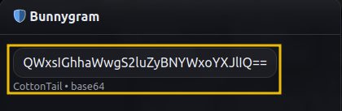
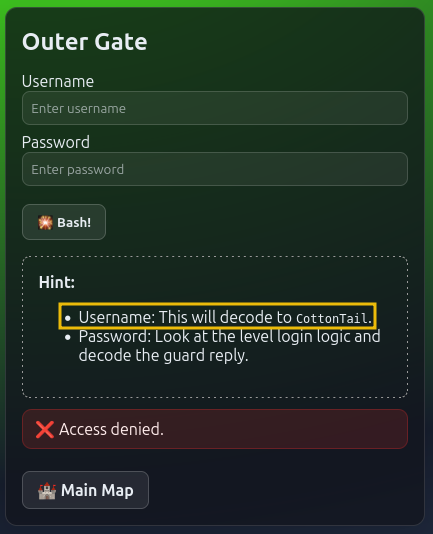
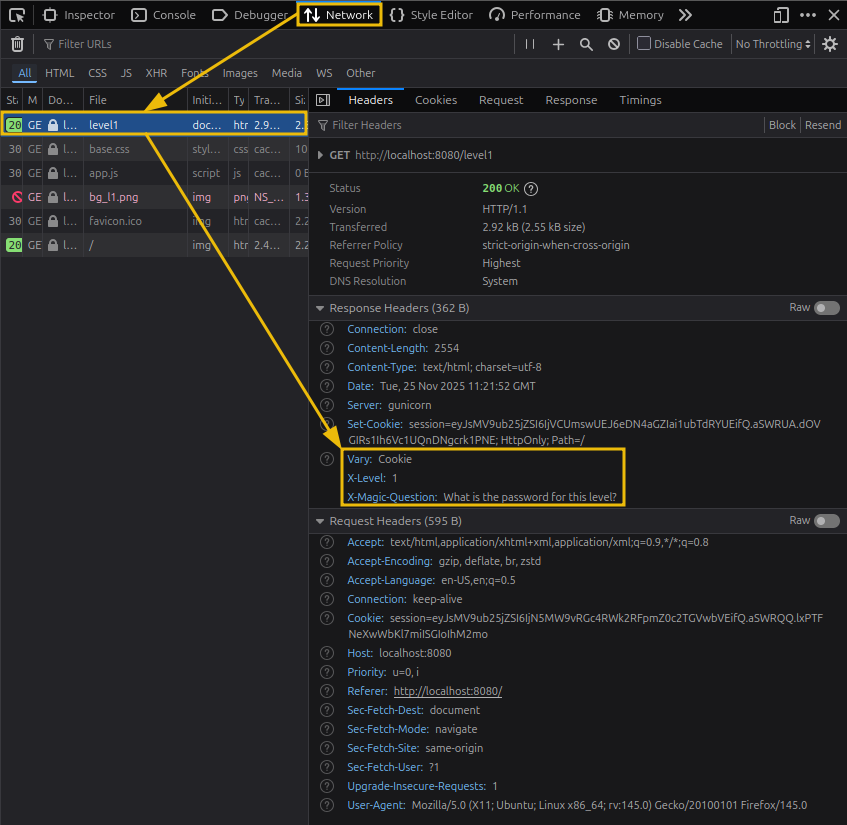
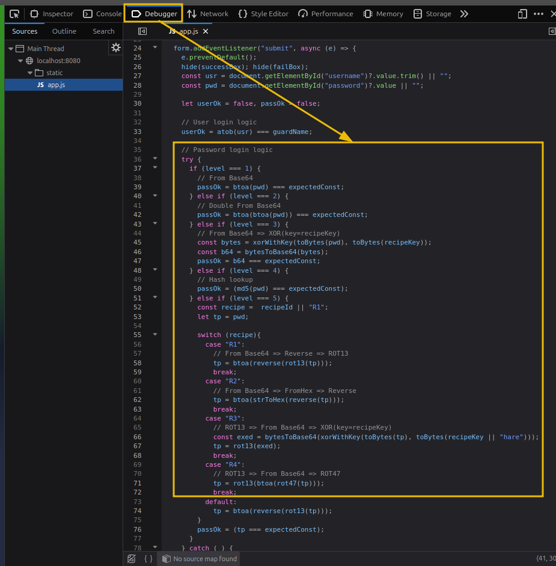

If not already, start the lab machine, give it a few minutes to boot up, and then, from the AttackBox, you can access the web app at http://10.49.182.12:8080.
McSkidy revealed some vital clues in his message. You will have to leverage any useful piece of information in order to break the locks.
Below are key points to look out for:




Ok, it’s time to siege the fortress. Ready?
1. First, identify the guard name and encode it to Base64. You will use this as the username input.
2. Next, using the information from the page headers, identify the magic question and encode it in Base64 as well.
3. Use the encode magic question in the chat. The guard will answer with the encoded level password.
4. Now, switch to the ‘Debugger’ tab and identify the login logic. In this case, the password is encoded to Base 64.
5. By decoding the answer from the guard, you will have the plaintext password.
6. Use the encoded username and plaintext password to log in.
Excellent work! One lock is down, and only four remain to be broken.